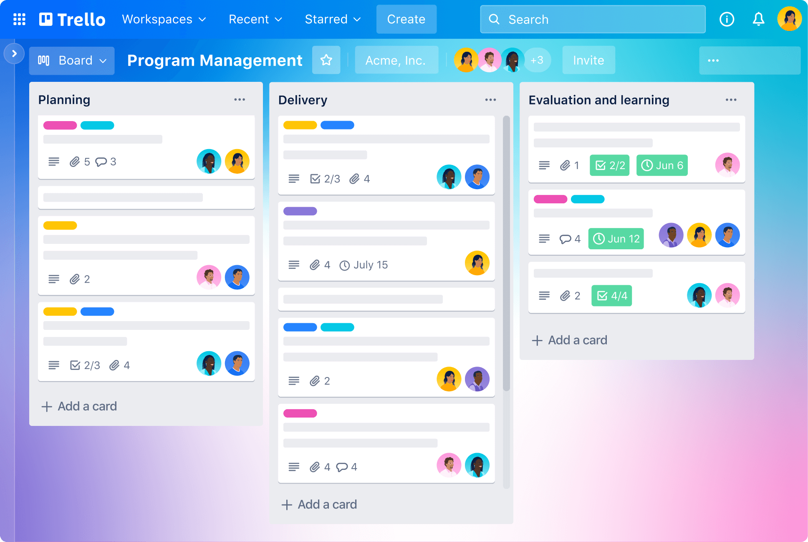

U radu na daljinu i fleksibilnom digitalnom okruženju najveća zamka nije nedostatak vremena — već **nedostatak strukture**. Kada nemate nekoga ko vam svakog jutra usmeno diktira šta treba da uradite, odgovornost za organizaciju posla u potpunosti pada na vas. Bez vizuelnog prikaza zadataka, radni dan se lako pretvori u reaktivno gašenje požara i stres pred same rokove.
1. Osnovni koncept: Kanban metoda
Većina savremenih alata za upravljanje projektima (Project Management) oslanja se na jednostavnu i izuzetno efikasnu **Kanban metodologiju**. Suština je u podeli rada na tri osnovne kolone:
- To Do (Za uraditi): Lista svih pristiglih obaveza, ideja i zadataka koji vas čekaju u narednom periodu.
- In Progress (U izradi): Zadaci na kojima trenutno radite. Zlatno pravilo je da u ovoj koloni ne držite više od 2 do 3 kartice istovremeno.
- Done (Završeno): Mesto gde premeštate urađene zadatke, što vam daje jasan uvid u ostvareni napredak i motivaciju za dalje.
„Ono što nije zapisano i vizuelno organizovano — ne postoji. Oslanjanje isključivo na pamćenje obaveza najbrži je put ka propuštenim rokovima i pregorevanju.”

2. Izbor odgovarajućeg alata
U zavisnosti od složenosti projekta i vaših navika, možete izabrati alat koji vam najviše odgovara:
- Trello: Najjednostavniji i najvizuelniji alat. Zasnovan je na karticama koje prevlačite iz kolone u kolonu. Idealno za brze projekte, školske zadatke i manje timove.
- Notion: Moćna digitalna sveska i radni prostor u kom pored tablica možete voditi beleške, dokumentaciju, baze podataka i lične planove na jednom mestu.
- Google Keep / Todoist: Odlični besplatni alati za vođenje brzih lista obaveza (Checklists) sa podsetnicima na telefonu.
3. Upravljanje vremenom u praksi: Pomodoro tehnika
Pored alata za praćenje zadataka, ključno je ovladati i tehnikom usmerene pažnje. Jedna od najpopularnijih je **Pomodoro tehnika**:
- Izaberite jedan zadatak sa vaše Kanban tabele.
- Podesite tajmer na **25 minuta** fokusiranog rada (bez telefona, društvenih mreža i sporednih tabova).
- Napravite pauzu od **5 minuta**.
- Nakon četiri vezana ciklusa, napravite dužu pauzu od 15 do 30 minuta.
4. Samodisciplina kao garancija slobode
Cilj organizacije vremena nije pretvaranje dana u striktni raspored bez daha, već pravljenje prostora za stvarni odmor. Kada jasno odvojite vreme za rad od vremena za slobodne aktivnosti, prestajete da budete talac nezavršenih obaveza i postajete gospodar sopstvenog rasporeda.